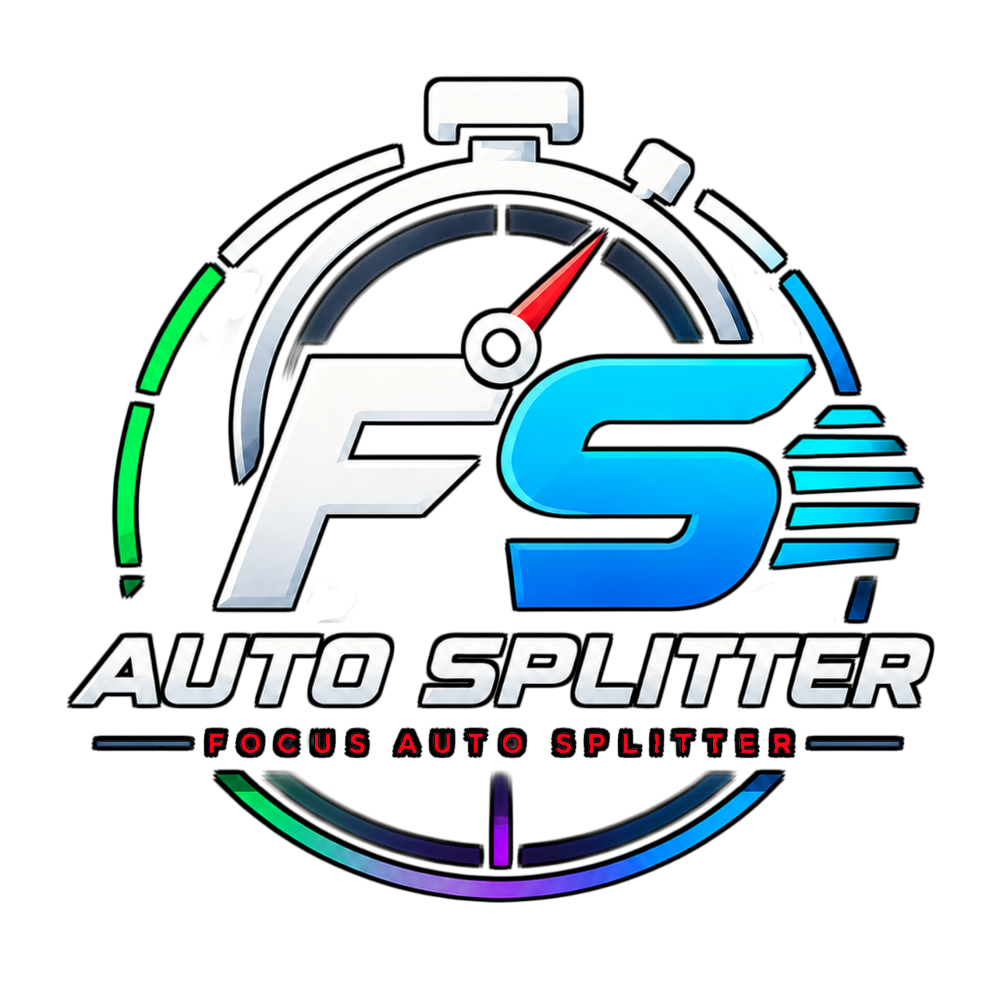

Focus AutosplitterSuivez ces étapes pour installer et configurer Focus Autosplitter avec LiveSplit.
Téléchargez la dernière version depuis la page téléchargement.
Focus-Autosplitter-Setup.exe
Lancez l'installateur puis suivez les étapes affichées.
Focus Autosplitter utilise LiveSplit pour gérer le timer de speedrun.
Télécharger LiveSplit
1. Téléchargez l'archive ZIP.
2. Extrayez-la dans un dossier.
3. Lancez :
LiveSplit.exe
LiveSplit Server est déjà inclus dans les versions récentes de LiveSplit.
Pour l'activer :
Port utilisé :
16834
Maintenant que LiveSplit Server est actif, vous pouvez connecter Focus Autosplitter.
16834
Cliquez ensuite sur le bouton de connexion.
🟢 LiveSplit : Connecté
La dernière étape consiste à sélectionner le jeu que vous souhaitez utiliser.
Sélectionnez la fenêtre du jeu ou de l'émulateur utilisé.
Sélectionnez :
Celeste.exe
Sélectionnez la fenêtre de votre émulateur puis vérifiez que l'aperçu fonctionne.
Vérifiez que la bonne fenêtre est sélectionnée dans Focus Autosplitter.
Vérifiez que :
Essayez de relancer le jeu ou de changer le mode de capture.
Si vous rencontrez un problème, vous pouvez demander de l'aide sur le forum.
Accéder au forum